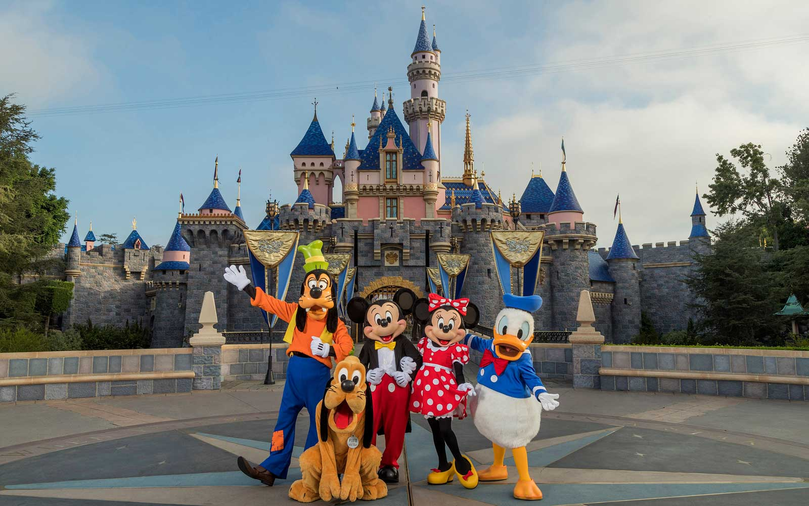
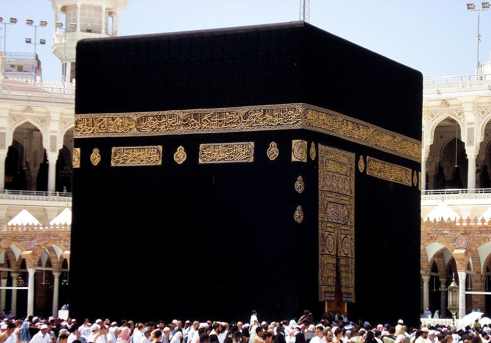

Blue Mosque

The Blue Mosque in Istanbul, also known by its official name, the Sultan Ahmed Mosque, is an Ottoman-era historical imperial mosque located in Istanbul, Turkey. A functioning mosque, it also attracts large numbers of tourist visitors. It was constructed between 1609 and 1616 during the rule of Ahmed I.
Disneyland
Disneyland is an amusement park in Anaheim, California, which opened in 1955. It is the only one designed and built under the direct supervision of Walt Disney. Walt Disney came up with the concept of Disneyland after visiting various amusement parks with his daughters in the 1930s and 1940s.
Faisal Mosque

The Faisal Mosque is a national mosque of Pakistan, located in capital Islamabad. It is the sixth-largest mosque in the world and the largest within South Asia, located on the foothills of Margalla Hills in Pakistan's capital city of Islamabad.
Khana Kaaba
The Kaaba, also spelled Ka'bah or Kabah, sometimes referred to as al-Kaʿbah al-Musharrafah, is a building at the center of Islam's most important mosque, the Masjid al-Haram in Mecca, Saudi Arabia. It is the most sacred site in Islam.
Naltar Valley

The Naltar Valley is a valley situated about 34 kilometres from the city of Gilgit in Gilgit−Baltistan, Pakistan. It is a forested region known for its dramatic mountain scenery and for the three lakes-Strangi Lake, Blue Lake and Bodlok Lake. Ski competitions are held at Naltar ski resort.
Neelum Valley

The district of Neelum is the northernmost of 10 districts located within the Pakistani-administered territory of Azad Kashmir. Taking up the larger part of the Neelam Valley, the district has a population of around 191,000 people. It was among the worst-hit areas of Pakistan during the 2005 Kashmir earthquake.
Walled City Lahore

The Walled City of Lahore, also known as Old City, forms the historic core of Lahore, Pakistan. The city was established around 1000 CE in the western half of the Walled City, which was fortified by a mud wall during the medieval era.